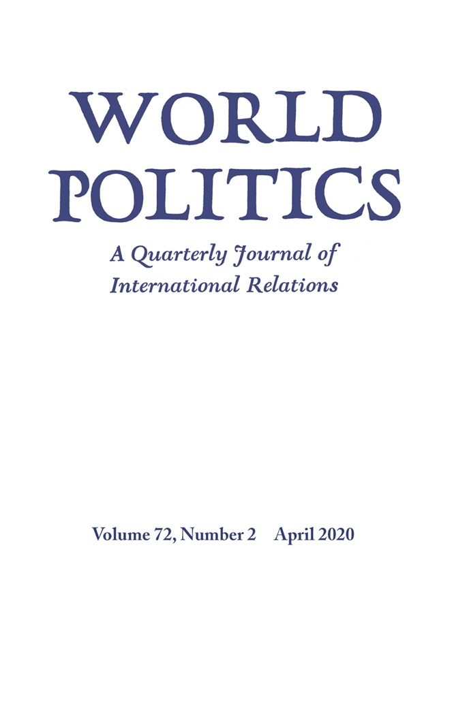

收录于合集 #新刊速递 123个

期刊简介

World Politics （《世界政治》）创刊于1948年，是享誉国际的政治科学季刊，内容涵盖国际关系和政治科学的各个领域，其主编是Deborah J. Yashar。该期刊欢迎的投稿类型有具有理论和实证贡献的研究类文章，以及有关国际关系和比较政治问题的评论性文章。2018年该期刊的影响因子为3.368，在91种国际关系类期刊中位列第7名，在196种政治科学类期刊中位列第15名。
本期编委
【编译】 陈勇、王泽尘、崔宇涵、周玫琳
【校对】 李玉婷
【审核】 施榕
【排版】 梁鑫昱

本期目录
1、 非民主的权力下放
Decentralization Without Democracy
2、 历史先例及二战后美洲地区主义
Historical Antecedents and Post-World War II Regionalism in the Americas
3、 经济利益的政治代议：民主的颠覆还是中产阶级至上？
The Political Representation of Economic Interests: Subversion of Democracy or Middle-Class Supremacy?
4、 压抑的心理学与极化
The Psychology of Repression and Polarization
01
非民主的权力下放
【题目】 Decentralization without Democracy
【作者】 Katrina Kosec, 国际食物政策研究所（International Food Policy Research Institute）发展战略和治理部高级研究员，约翰斯·霍普金斯大学兼职教授，主要研究领域包括：发展经济学、公共经济学和政治经济学；
Tewodaj Mogues，2018年加入IMF的财政事务部（FAD）担任研究员，2005-2018年在国际食物政策研究所的发展战略和治理部工作，主要关注乡村地区的公共支出分析、地方公共财政和权力下放、政治经济学、公共服务供给、农业发展和社会资本。
【摘要】
越来越多的国家进行了权力下放，诸如选举问责制和人口流动性等有关权力下放的形式模型所作的假设在这些国家中往往无法成立。在这些情境中，权力下放如何影响公共服务供给？针对专制的埃塞俄比亚政府部分推出的权力下放的举措，作者借助空间断点回归设计来识别其影响。权力下放促进了生产性服务的供给，例如在农业方面，但是对社会服务，例如提供饮用水的服务没有影响。这一发现与一种模型相符。地方领导人对那些能够带给他们最大回报的公共投资拥有更大的信息优势解，进行权力下放的主要激励因素不是提升公民的效用，而是最大化其产出，后者是政府租金的来源。这些发现阐明了非选举机制中的权力下放如何影响公共产品的供给，也有助于解释非民主背景下权力下放的复杂作用。
Increasingly, decentralization is being adopted by countries in which assumptions made by formal models of decentralization, such as electoral accountability and population mobility, fail to hold. How does decentralization affect public service delivery in such contexts? The authors exploit the partial rollout of decentralization in the autocratic context of Ethiopia and use a spatial regression discontinuity design to identify its effects. Decentralization improves delivery of productive services, specifically, agricultural services, but has no effect on social services, specifically, drinking water services. This finding is consistent with a model in which local leaders have superior information about the public investments that will deliver the greatest returns and they are incentivized by decentralization to maximize citizens’ production—on which rents depend—rather than citizens’ utility. These findings shed light on nonelectoral mechanisms through which decentralization affects public goods provision and help to explain decentralization’s mixed effects in many nondemocratic settings.
【编译】陈勇
【校对】李玉婷
02
历史先例及二战后美洲地区主义
【题目】 Historical Antecedents and Post–World War II Regionalism in the Americas
【作者】 Tom Long，华威大学政治和国际研究副教授,他的研究主要涉及美洲、小国和国际关系的不对称性。
【摘要】 第二次世界大战后，美国主导的国际安全秩序呈现出显著的地区差异。关于这种差异的解释一直是为什么亚洲没有北约这一争论的核心。但这场辩论忽略了美国和拉美国家在同一关键节点出现的多边安全协议。考虑到通常用来解释北约与亚洲之间分歧的三个因素:分担责任、外部威胁和集体认同，这些美洲机制往令人费解。这些条件不足以解释同时期出现的美洲安全多边主义。尽管战后美洲体系的特征是美国主导地位的巩固，但在其构建之时，拉美领导人认为，美洲体系是维持美国在西半球有益参与、同时加强弱国话语权机会、对美国单边主义施加制度约束的最佳选择。借鉴多国档案研究，作者提出了一个历史制度主义的叙述。地区主义共同的历史先例决定了拉美和美国领导人在新地区制度可取性（desirability）和性质（nature）方面的选择范围，同时在这个关键节点通过分层和转换机制促进了制度变革。
After World War II, the US-led international security order exhibited substantial regional variation. Explaining this variation has been central to the debate over why is there no nato in Asia. But this debate overlooks the emergence of multilateral security arrangements between the United States and Latin American countries during the same critical juncture. These inter- American institutions are puzzling considering the three factors most commonly used to explain divergence between nato and Asia: burden-sharing, external threats, and collective identity. These conditions fail to explain contemporaneous emergence of inter-American security multilateralism. Although the postwar inter-American system has been characterized as the solidification of US dominance, at the time of its framing, Latin American leaders judged the inter-American system as their best bet for maintaining beneficial US involvement in the Western Hemisphere while reinforcing voice opportunities for weaker states and imposing institutional constraints on US unilateralism. Drawing on multinational archival research, the author advances a historical institutionalist account. Shared historical antecedents of regionalism shaped the range of choices for Latin American and US leaders regarding the desirability and nature of new regional institutions while facilitating institutional change through mechanisms of layering and conversion during this critical juncture.
【编译】王泽尘
【校对】李玉婷
03
经济利益的政治代议：民主的颠覆还是中产阶级至上？
【标题】 The Political Representation of Economic Interests: Subversion of Democracy or Middle-Class Supremacy?
【作者】 Mads Andreas Elkjær，牛津大学纳菲尔德学院政治与国际关系学院博士后研究员；Torben Iversen，哈佛大学哈罗德·希钦斯·伯班克（Harold Hitchings Burbank）政治经济学教授。
【摘要】
日益加剧的不平等引起了人们的担忧，认为民主政府不再回应多数人的要求，作者将这种观点称为“民主颠覆模型”(subversion of democracy model, 以下简称SDM)。SDM有两种形式：一是利用民意数据显示，政策严重偏向富人的偏好；二是使用宏观层面的数据表明，政府没有对日益加剧的不平等做出回应。本文对SDM进行了批判性的再评估，指出了其潜在的偏差，并提出了一种对数据进行不同诠释的解决方法，作者称之为代议制民主模型(representative democracy model，以下简称RDM)。在利用民意数据和新的财政政策数据集对SDM和RDM进行检验后，作者发现，即使不平等在加剧，中产阶级的权力仍然历久弥强。两位作者得出结论，富人对再分配政策的影响力很小，而民主国家显然没有受到来自全球资本越来越多的限制。
Rising inequality has caused concerns that democratic governments are no longer responding to majority demands, an argument the authors label the subversion of democracy model (SDM). The SDM comes in two forms: one uses public opinion data to show that policies are strongly biased toward the preferences of the rich; the other uses macrolevel data to show that governments aren’t responding to rising inequality. This article critically reassesses the SDM, points to potential biases, and proposes solutions that suggest a different interpretation of the data, which the authors label the representative democracy model (RDM). After testing the SDM against the RDM on public opinion data and on a new data set on fiscal policy, they find that middle-class power has remained remarkably strong over time, even as inequality has risen. The authors conclude that the rich have little influence on redistributive policies, and that the democratic state is apparently not increasingly constrained by global capital.
【编译】崔宇涵
【校对】李玉婷
04
压抑的心理学与极化
【题目】 The Psychology of Repression and Polarization
【作者】 Elizabeth R. Nugent，耶鲁大学政治学系助理教授。
【摘要】
在压抑的条件下，政治极化是如何发生的？基于有关社会认同的心理学理论，作者提出，压抑的本质推动极化（的形成）。压抑会改变群体认同，使群体间感知到的距离发生变化，并最终通过差异化（differentiation）过程来影响群体间情感与偏好的极化程度。运用混合方法（mixed- method）的数据与分析，作者检验了（自己）提出的这一因果关系。实验室实验结果表明，目标性压抑下的启动效应（prime）导致更强的群体内认同与群体间极化，而受到广泛压抑的启动效应导致前述两项指标的弱化。启动效应的效果（从实验结果）看来是被群体认同（过程）所协调的。在埃及和突尼斯被以不同程度压抑的政治反对群体间的极化，为该实验结果提供了案例研究证据。这些发现有助于理解如下问题：压抑条件下的极化，如何改变对民主政治的成功必不可少的对立行为体间合作行为的可能性。
How does political polarization occur under repressive conditions? Drawing on psychological theories of social identity, the author posits that the nature of repression drives polarization. Repression alters group identities, changing the perceived distance between groups and ultimately shaping the level of affective and preference polarization between them through differentiation processes. The author tests the proposed causal relationship using mixed-method data and analysis. The results of a laboratory experiment reveal that exposure to a targeted repression prime results in greater in- group identification and polarization between groups, whereas exposure to a widespread prime results in decreased levels of these same measurements. The effect of the primes appears to be mediated through group identification. Case-study evidence of polarization between political opposition groups that were differently repressed in Egypt and Tunisia reinforces these results. The findings have implications for understanding how polarization, as conditioned by repression, may alter the likelihood of the cooperative behavior among opposition actors necessary for the success of democratic politics.
【编译】周玫琳
【校对】李玉婷


好好学习，天天“在看”
国政学人
支持学术公益与知识传播
微信扫一扫赞赏作者 __赞赏
已喜欢，对作者说句悄悄话
取消 __
发送给作者
发送
最多40字，当前共字
上一页 1/3 下一页
长按二维码向我转账
支持学术公益与知识传播
受苹果公司新规定影响，微信 iOS 版的赞赏功能被关闭，可通过二维码转账支持公众号。